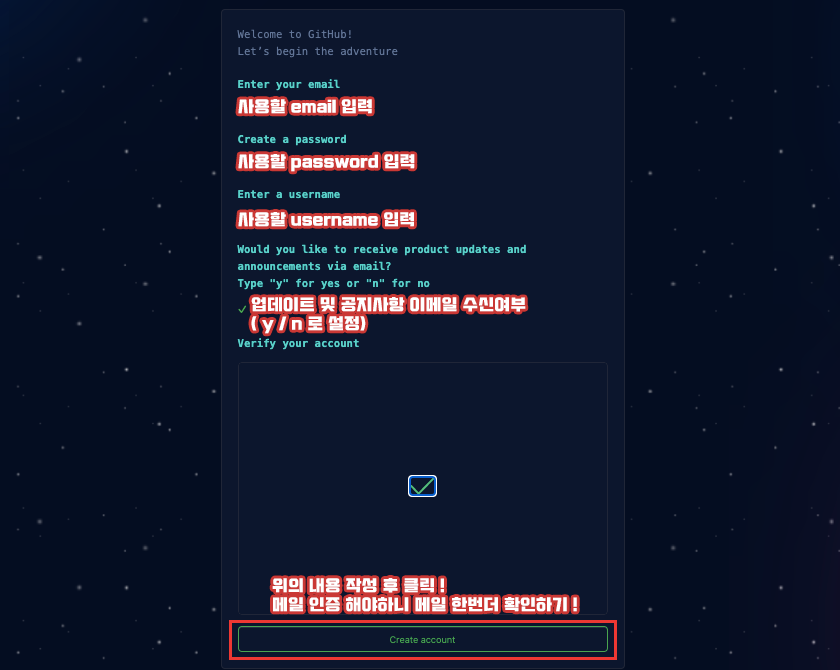
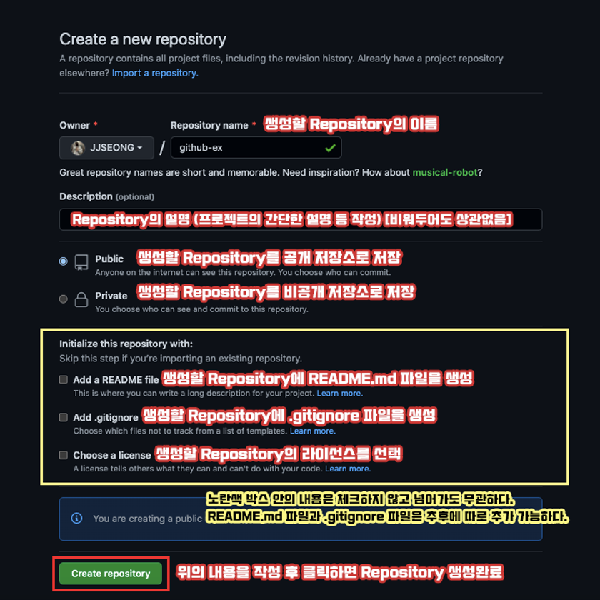

Github 설정과 명령어
⭐️ Github 연결과 명령어
Git의 사용자 설정까지 진행했으면, 이제 원격저장소(Remote Repository)인 Github의 저장소(Repository)에 명령어들을 사용하여 저장하는 방법을 알아보고, 각종 명령어들의 역할과 내용에 대해 알아보자.
⭐️ Github 회원가입
Github을 사용하기 전에 먼저 회원가입을 하여야한다. https://github.com/ 의 홈페이지로 이동하여 회원가입을 진행한다.

아이디를 생성했으면 로그인을 하고, Repositories 탭으로 이동하여 새로운 저장소(Repository)를 생성한다.
